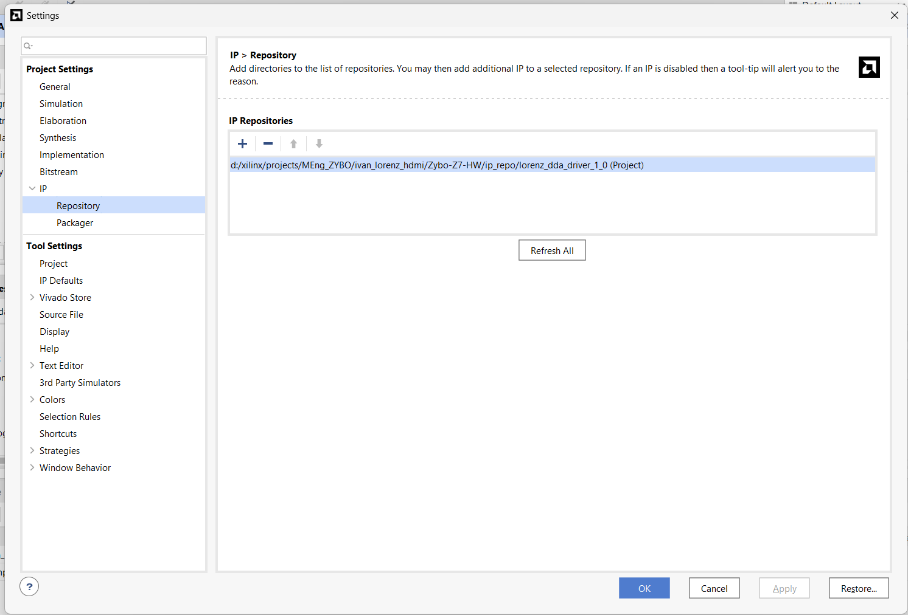
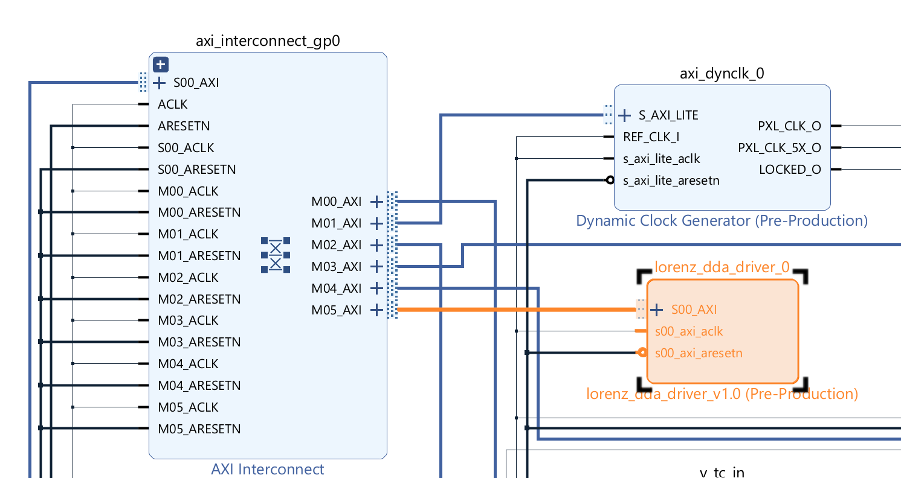
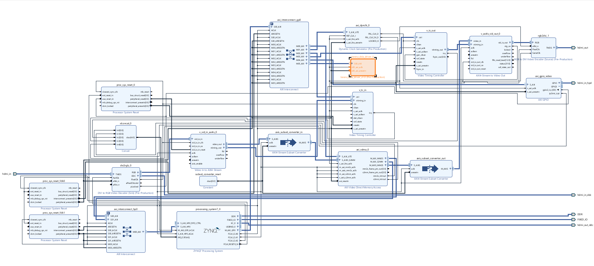
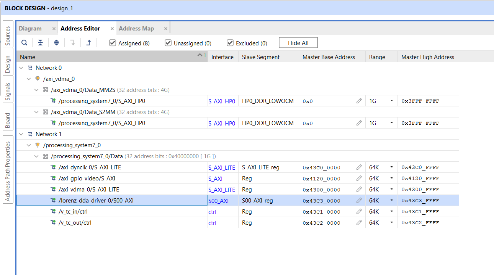
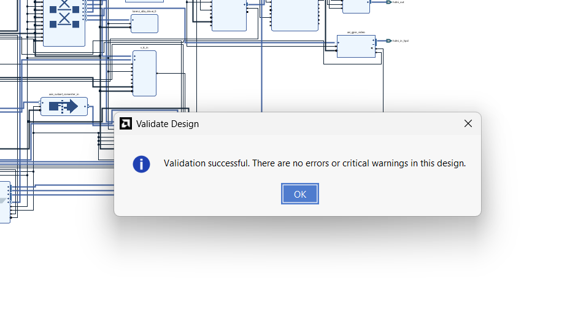

Attempt 3 · second fresh restart: hardware side (09-22 morning)
The build that worked. Same flow as the clean site.
04.1Start from Digilent's release archives
- Download the demo from Digilent's Zybo Z7 HDMI demo page and extract the Zybo-Z7-10-HDMI release: the hardware archive (
Zybo-Z7-10-HDMI-hw.xpr.zip→ Vivado projectZybo-Z7-HW) and the software archive (Zybo-Z7-10-HDMI-sw.ide.zip→ Vitis workspace with platformdesign_1_wrapper, appZybo-Z7-10-HDMI, system project). - Open
Zybo-Z7-HW.xprin Vivado 2024.1. The archive already carries the Digilent IP repository (axi_dynclk,rgb2dvi,dvi2rgb,tmds) inZybo-Z7-HW.ipdefs/repo/vivado-library.
Two earlier attempts (a hand-simplified design, then a first fresh project) ended in problems that were not worth debugging; a clean, known-good baseline avoided all of them.
Figure (text only). Opening Zybo-Z7-HW.xpr in Vivado 2024.1 shows the stock design_1 block diagram (next figure).

04.2What the stock block design contains
- PS7 with GP0 (control) and HP0 (video DMA);
axi_interconnect_gp0for AXI-Lite slaves;axi_interconnect_hp0for the VDMA. - TX chain:
axi_vdma_0→axis_subset_converter_out→v_axi4s_vid_out_0(+v_tc_out) →rgb2dvi_1; pixel clock fromaxi_dynclk_0. - RX chain (unused by my app, left in place):
dvi2rgb_0,v_tc_in,v_vid_in_axi4s_0,axi_gpio_video. - Stock AXI-Lite addresses:
axi_vdma_00x43000000,axi_dynclk_00x43C00000,v_tc_in0x43C10000,v_tc_out0x43C20000,axi_gpio_video0x41200000.
The custom IP has to slot in next to these without disturbing the video path; knowing the map avoids address clashes.

04.3Add the IP repository to the project
- Project Settings → IP → Repository: add
ip_repo/lorenz_dda_driver_1_0(it is listed as a Project repository); click Refresh All and check the definition shows revision 3.
The BD can only instantiate what the catalog holds; a stale or duplicated path gives an older definition. See I-03.
set_property ip_repo_paths [list \
[file normalize [get_property directory [current_project]]/ip_repo/lorenz_dda_driver_1_0] \
[file normalize [get_property directory [current_project]]/Zybo-Z7-HW.ipdefs/repo] \
] [current_project]
update_ip_catalog -rebuild
get_ipdefs -all *lorenz_dda_driver* ;# xilinx.com:user:lorenz_dda_driver:1.0
get_property core_revision [get_ipdefs xilinx.com:user:lorenz_dda_driver:1.0] ;# expect 3
04.4Instantiate and wire lorenz_dda_driver_0
- Add the IP to
design_1and run Run Connection Automation; the result isS00_AXIon a new master port M05_AXI ofaxi_interconnect_gp0(NUM_MI= 6). - Clock
s00_axi_aclkandM05_ACLK=FCLK_CLK0(100 MHz, netACLK_2); resets00_axi_aresetnandM05_ARESETN=proc_sys_reset_fclk0/peripheral_aresetn.
The IP is a plain AXI-Lite peripheral on the same clock/reset as the other control registers; no interrupts, no extra I/O ports.


04.5Address assignment
- Address Editor:
/lorenz_dda_driver_0/S00_AXI/S00_AXI_reg= 0x43C30000, range 64K (0x43C30000-0x43C3FFFF). - Existing slaves keep their addresses (VDMA 0x43000000, dynclk 0x43C00000, v_tc_in 0x43C10000, v_tc_out 0x43C20000, gpio 0x41200000).
The software base address comes from xparameters.h, but knowing 0x43C30000 makes a wrong-bitstream fault easy to recognise.

04.6Upgrade the instance to revision 3
- The instance had been created from the first packaging (Rev 1: the wizard version with the 7 registers I entered, 5-bit address). Report IP Status → Upgrade Selected moved it to Rev 3.
- The log ends with CAUTION and a Critical Warning about port-width differences (5 → 7 bits). That is expected: the parameter is disabled in the new revision, so Vivado ignores the old value and keeps 7.
- Verify
CONFIG.C_S00_AXI_ADDR_WIDTH= 7, validate the design, save.
Rev 3 decodes 12 registers, which needs a 7-bit bus; a 5-bit instance could only reach the first 8 words, so BETA/DT/X-Y-Z-next would not exist.
CAUTION (success, with warnings) in the upgrade of design_1_lorenz_dda_driver_0_0
(xilinx.com:user:lorenz_dda_driver:1.0) from (Rev. 1) to (Rev. 3)
-Upgraded port 's00_axi_araddr' width 7 differs from original width 5
-Upgraded port 's00_axi_awaddr' width 7 differs from original width 5
An attempt to modify the value of disabled parameter 'C_S00_AXI_ADDR_WIDTH' from '7' to '5'
has been ignored for IP 'design_1_lorenz_dda_driver_0_0'report_ip_status
upgrade_ip [get_ips design_1_lorenz_dda_driver_0_0]
get_property CONFIG.C_S00_AXI_ADDR_WIDTH [get_ips design_1_lorenz_dda_driver_0_0] ;# expect 7
validate_bd_design
save_bd_designFigure (text only). Report IP Status lists design_1_lorenz_dda_driver_0_0 as IP revision change with recommendation Upgrade IP; Upgrade Selected performs it.

Related: Issue I-03
04.7Validate, generate output products, wrapper
- Validate Design (F6) — no errors; Generate Output Products (Global); use the Vivado-managed
design_1_wrapper.
Catches unconnected clocks/resets before a 10-minute synthesis run.

04.8Synthesis, implementation, bitstream
- Generate Bitstream (or the Tcl below). After the run, check the run timestamps in
synth_1/impl_1and that the log mentionslorenz; if in doubt,reset_run synth_1first. - Result: synthesis complete, bitstream written.
Only a re-synthesis picks up block-design changes; write_bitstream alone reuses the last routed checkpoint (a stale bitstream is a classic cause of a data abort on first register access). It happened in attempt 2, I-12.
launch_runs impl_1 -to_step write_bitstream -jobs 8
wait_on_run impl_1
write_hw_platform -fixed -include_bit -force -file <project>/design_1_wrapper.xsa
Figure (text only). After the run, Reports → Timing Summary should show all user-specified timing constraints met; check it before exporting the hardware.
04.9Export hardware with the bitstream
- File → Export → Export Hardware → Include bitstream →
Zybo-Z7-HW/design_1_wrapper.xsa.
The XSA is the only thing Vitis needs: it carries the bitstream, ps7_init and the BD's address map (and a copy of the IP driver).

04.10Update the Vitis platform
- Right-click platform
design_1_wrapper→ Update Hardware Specification → pick the newdesign_1_wrapper.xsa. - Clean Project, then Build Project on the platform (this rebuilds the BSP; there is no separate 'build BSP').
Until this is done the BSP still holds the Digilent 2024-07-04 files and has no LORENZ macro; the app would still compile because the Lorenz code is behind #ifdef, and silently do nothing.
![Assistant view: right-click design_1_wrapper [Platform] → Update Hardware Specification (Build and Clean are in the same menu)](../../figures/step-vitis-update-platform.png)
Related: Issue I-06
04.11Fix the driver Makefile typo
- Platform build failed in
lorenz_dda_driver_v1_0; fix($wildcard ...)→$(wildcard ...)(LIBSOURCES and OUTS). - Fix the source (
ip_repo/.../drivers/.../src/Makefile) and re-export if the BSP re-extracts it; copies also live indesign_1_wrapper/hw/drivers,tempdsa/drivers, the app BSPlibsrc, the FSBL BSPlibsrc, andZybo-Z7-HW.gen/.../ip/.../drivers. - Rebuild the platform: 'Build Finished', libxil.a rebuilt for both BSPs.
The typo is in the Vivado-generated driver template, so it comes back with every fresh copy of the IP; the cannot find -lrsa error that follows is only a knock-on.
arm-xilinx-eabi-gcc.exe: error: (ildcard: linker input file not found: No such file or directory
arm-xilinx-eabi-gcc.exe: error: *.c): linker input file not found: Invalid argument
make[1]: *** [Makefile:46: ps7_cortexa9_0/libsrc/lorenz_dda_driver_v1_0/src/make.libs] Error 2
Failed to generate the platform. Reason: Failed to build the zynq_fsbl application.# broken (Vivado 2024.1 generated):
LIBSOURCES=($wildcard *.c) # make expands $w (empty) -> gcc gets '(ildcard' and '*.c)'
OUTS = ($wildcard *.o)
# fixed:
INCLUDEFILES=$(wildcard *.h)
LIBSOURCES=$(wildcard *.c)
OUTS = $(wildcard *.o)Figure (text only). The console output is the log excerpt above.
Related: Issue I-07
04.12Confirm the macro exists
- Open the BSP
xparameters.hand searchLORENZ:XPAR_LORENZ_DDA_DRIVER_0_S00_AXI_BASEADDR=0x43C30000. The file must have a current modification time. - The generated
lorenz_dda_driver.hin the BSP is stale (onlySLV_REG0-6); it is not used — the app defines its own offsets.
This macro is the switch that compiles the Lorenz code in.
/* design_1_wrapper/ps7_cortexa9_0/domain_ps7_cortexa9_0/bsp/ps7_cortexa9_0/include/xparameters.h */
#define XPAR_LORENZ_DDA_DRIVER_0_S00_AXI_BASEADDR 0x43C30000Figure (text only). Searching the file for LORENZ finds one define, XPAR_LORENZ_DDA_DRIVER_0_S00_AXI_BASEADDR (see the snippet above).
← 03 Attempt 2 · first fresh restart · 05 Attempt 3 · PS driver and plotter →
docs-site/figures/ (see its README). Yellow TODO(user) marks facts I could not find.